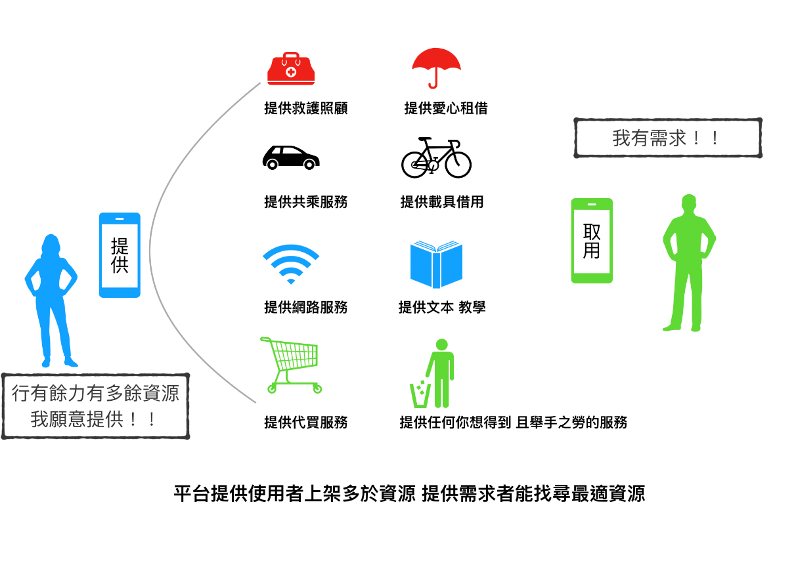

專案摘要
以市面上共享平台（如：食物銀行）為發想基礎，實踐共享經濟的核心價值：共用人力與資源的社會運作方式， 讓使用者提供創造、生產、分配、交易的共享，讓閒置資源能夠有效提高。 市面上目前都是提供實體商品的租借或是汽車共享，本計畫則是提供一個能讓使用者租賃服務的平台， 不需要大量投放商品到平台，而是讓真正行有餘力的提供者，提供任何順手之勞的服務到平台上。 因市面上營利公司為產生市佔率而自行生產大量共享商品反倒浪費更多資源，為避免讓平台悖離共享經濟使資源更有效利用的精神， 平台有償租借的回饋機制交由雙方使用者自行決定，提供者也能以此條件挑選需求者，讓提供者也能繼續願意付出在社會上， 幫助更多需要幫忙的大眾。
系統流程
供應者A 提出提供之服務或資源🡪等待多人申請🡪
供應者A 可以選擇與需求者B、C、D的某方進行共享交流🡪
透過溝通系統達成共識🡪雙方達成任務後回報系統🡪
系統確認雙方進入評價系統🡪完成此Case。
需求者E看到有自己需求的資源在平台上🡪
提供自己的回饋機制並提出申請🡪
供應者F覺得E的回饋機制與時間地理條件最能接受，就接受E的申請🡪
透過溝通系統達成共識 🡪雙方達成任務後回報系統🡪
系統確認後雙方進入評價系統🡪完成此Case。
可能應用情境
小明今天住在宿舍7樓，因晚上突然有急事無法下去倒垃圾，於是使用這個App搜尋有沒有人提供倒垃圾的服務。
小君是個非常熱心的人，今天剛好要下樓清理垃圾，想說還可以再幫忙多拿一袋，因此在App發出這個服務，
剛好看到小明的申請。於是開始了這個任務，小明接受到跑腿進行中，於是與小君進入私人聊天室開始分享資訊，
小君拿到資訊後前往小明的房間領取垃圾，小明點取完成訂單並等待小君的回應，小君丟完垃圾也點取完成訂單，
則開始進入評分流程，當雙方都評完分則完成此任務則任務結束。
小明每天晚上七點到十點會在圖書館讀書，並使用私人熱點，他想到也許會有人也有需要用到網路，
便分享到平台上，由於小君的網路是有流量控管，他發現在平台上有人願意提供網路使用，並與小明申請，
小明接受後在聊天室告訴小君他的 密碼，作為回報小君也願意教導小明在課業有問題的部分。
小明每天需要從基隆與台北通勤，他願意提供每天跟他差不多時間與路程的朋友一起上班，於是他將這項服務放到平台上，
小君也是一位上班族，他每天需要搭車通勤，他發現平台上小明的服務，看過小明的評價後，
他申請小明的服務且願意一同負擔油錢，小明看過小君的回饋與評價後很滿意，便與小君聯絡，
而雙方在任務結束後給對方極高的評價，雙方也因此變成要好的朋友。
小明在家裡喜歡種植蔬果，剛好最近收成過多的紅蘿蔔，他願意分享給需要的人取用，
於是他發起贈送紅蘿蔔的任務，小君家裡有親戚送了兩箱鳳梨，他便申請小明的任務並願意回饋鳳梨給小明，
小名接受後雙方約定時間和地點，交換彼此的農作物。
預期結果
本App希望提供擁有多餘資源且願意使資源使用效率提高的用戶使用，希望完成之功能包含：
希望這個App可以把台灣人熱情熱心的態度更統整的展現在這個平台上，實現真正共享經濟的意義。